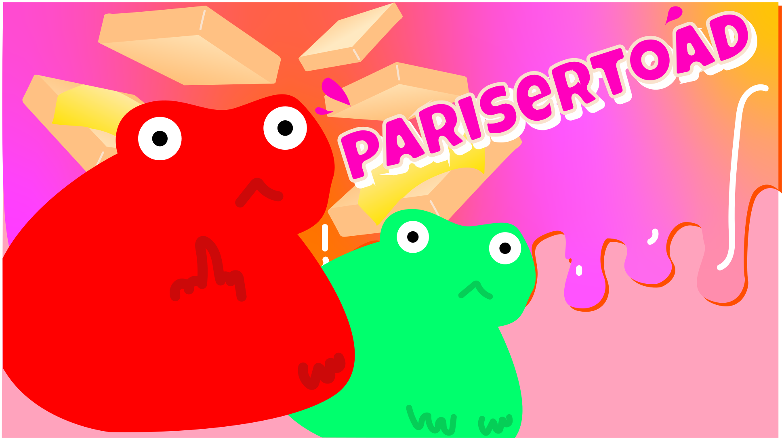

TEMA4

Grundlæggende animation
I dette tema har vi opgraderet vores kodnings kompetencer fra tema2, og har nu implementeret Java og CSS animationer for at kunne udarbejde et spil. Ved hjælp af blandt andet, moodboard, spillediagrammer har jeg udarbejde spillet parisertoad, ideen kommer fra en af mine plakater, hvor jeg valgte at køre videre på universet, men twist det over stilarten Kawaii, for at imødekomme en brugervenlig spilleoverflade. Min syntetiske farvepalette består primært af: pink, gul og grøn.
PARISERTOAD